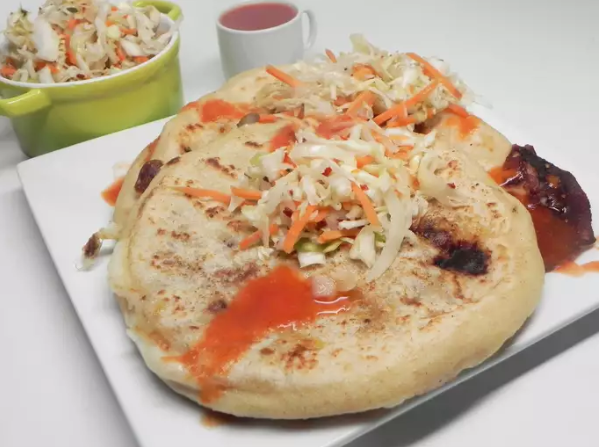

Pupusas

Description
A popular and delicious Salvadorean dish. It does take some time, however it is well worth the effort! You can purchase pre-made chicharron at specialty markets, however this recipe tastes just like it. I also make the salsa roja and curtido ahead of time (the salsa freezes very well, and the curtido can stay in the fridge at least a week).
Ingredients
Salsa Roja:
- 4 cups plain tomato sauce
- 1 cup water
- 4 bunches fresh cilantro, chopped
- 1 green bell pepper, seeded and chopped
- 1 onion, chopped
- 2 cloves garlic, crushed (Optional)
- 1 cube chicken bouillon
- salt to taste
Curtido:
- ½ head cabbage, shredded
- 1 large carrot, peeled and grated
- ½ cup white vinegar
- 3 scallions, minced
- 2 tablespoons dried oregano
- 1 pinch crushed red pepper flakes